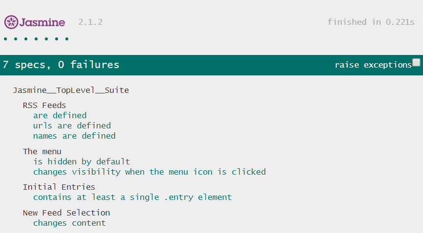

Testing is an important part of the development process and many organizations practice a standard of development known as "test-driven development". It also makes sure future feature development doesn't break existing features
Wrote unit tests using Jasmine framework to verify the underlying business logic of the application as well as the event handling and DOM manipulation.
Tests Including:
$(function() {
"use strict";
/* This suite is all about the RSS feeds definitions,
* the allFeeds variable in our application.
*/
describe('RSS Feeds', function() {
/* It tests to make sure that the allFeeds variable has
* been defined and that it is not empty.
*/
it('are defined', function() {
expect(allFeeds).toBeDefined();
expect(allFeeds.length).not.toBe(0);
});
/* Test that loops through each feed in the allFeeds object.
* and ensures it has a URL defined and that the URL is not empty.
*/
it('urls are defined', function() {
//loop through each feeds
allFeeds.forEach(function(feed){
expect(feed.url).toBeDefined();
//toBeTruthy will detect null and empty string.
expect(feed.url).toBeTruthy();
});
});
});
// This suite is all about the new feed selection behaves
describe('New Feed Selection', function() {
/* This test ensures when a new feed is loaded by the loadFeed
* function that the content actually changes.
*/
// This variable is used to store first-time loaded contents.
var contents;
beforeEach(function(done) {
// Call loadFeed first time with id = 0.
loadFeed(0, function() {
// Store retreived contents in the 'contents' variable.
contents = $(".feed .entry").html();
// Call loadFeed again with a different id
loadFeed(1, done);
});
});
/* After second loadFeed is called, it is expected to see the contents
* in DOM do not match with the 'contents' variable.
*/
it('changes content', function() {
expect($(".feed .entry").html()).not.toMatch(contents);
});
});
}());